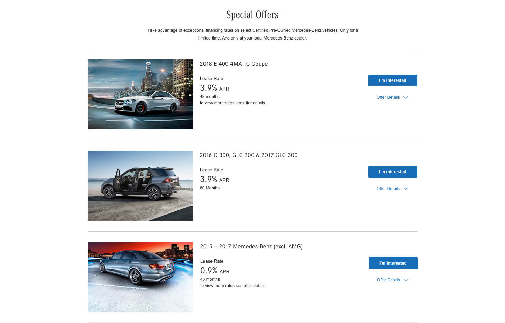

Heroes
There are different types of Heroes for different pages: Brand Hero, Home Page Hero, Sales Hero, Specialty Hero, Title Hero
Download the AssetBrand Hero
This type of hero is used on the Home Page. Optional configurations include placing the text on the left or right, and selecting light or dark copy style.
Sales Hero
This type of hero is used on the Home Page. Optional configurations include placing the text on the left or right, and selecting light or dark copy style.
Sales Hero
This type of hero is used on the Home Page. Optional configurations include placing the text on the left or right, and selecting light or dark copy style.
Specialty Hero
This type of hero is used on the Home Page. Optional configurations include placing the text on the left or right, and selecting light or dark copy style.
Flexible Content Sections
Sections are used to add groups of content to a page, and also support waypoint navigation. There are several types of sections, but the main ones used for authoring flexible content are: Default Content Section, Class Content Section, Introduction Section
Download the AssetSpecialty Hero
This type of hero is used on the Home Page. Optional configurations include placing the text on the left or right, and selecting light or dark copy style.
Specialty Hero
This type of hero is used on the Home Page. Optional configurations include placing the text on the left or right, and selecting light or dark copy style.
Specialty Hero
This type of hero is used on the Home Page. Optional configurations include placing the text on the left or right, and selecting light or dark copy style.
Featured Modules
There are different types of Heroes for Featured modules appear on different pages and are used to display up to 3 columns of links, promos, or other summary content
Download the AssetFeatured Link List
Featured Link List appears on the Services and Parts page, and contains 3 lists of links.
Media & Links List
This module allows for authoring of left or right aligned, image or video and set of links horizontal to each other.
Featured Offers
Featured Offers appears on the Special Offers page. It can contain 1, 2 or 3 selected offers from the page.
Featured Promo List
The Featured Promo List appears on the Home Page. It contains 3 columns of short promos.
CPO Offer List

This is an element that can be used to create the information for a CPO Offer Group and is found on the CPO Offer Group Page.
Specific functions
These modules include specific, functional elements of pages that are used to list tools, organize subpages, or pull in vehicle data. These include: Offer Group, Offer Summary, CPO Offer Group, CPO Offer Offer Summary, CPO Offer List, Quick Links, Shopping Tools Module, CTA Banner and Map Module
Download the AssetCPO Offer Summary
This module is used to add offer summary information to a CPO Offer Page.
CPO Offer Group
This module is used to add a dynamic list of CPO Offers to a section and is added to a Default Content Section.
Offer Group
Offer Group is used to selection options that form the Headings and Subheads for groups of offers on the Special Offers page. Default headings and subheads will be driven by the class names and bodystyles, but they can also be manually overridden by the content author.
Offer Summary
Offer Summary is a selection of Vehicle Data and content that's used to summarize an offer. These are authored on individual pages, but are pulled into the Special Offers page.
Quick Links
Quick Links appear at the bottom of a Class Page. Authors can choose from a set list of icon options, and can edit the label and link destination.
Shopping Tools Module
The Shopping Tools Modules appears on the Home Page. Authors can choose from a set list of icon options, and can edit the label and link destination.
CTA Banner
This module is a container for several types of CTAs including: CTA Link Widget (which can be used for Social or other types of links), CTA Contact Widget (for providing additional contact information
Map Module
A module used to display a map with authored locations.
FAQ Module
This module is designed to provide question and answer fields for frequently asked questions. The answer text isn't displayed until clicking the question area. The answer text uses rich text.
Link Group
This component allows for authoring of a group of links with a shared headline. It can be used by itself on the Site Map Page or within a Compact Tile Grid.
Mixed-Media Content
These modules are used to add media and images to pages, in a variety of configurations. These include: Angled Vehicle Image, Toggle Image, Fixed-Width Media, Home Page Promo, Image Slider, Image Text Promo, Image Text Promo - Small Image, Media & Text, Proof Points, Tabbed Module, Compact Tile Grid, Large Tile Grid and Video Promo
Download the AssetAngled Vehicle Image
This module allows authors to enter one or more main image, and an angled vehicle image. If there's more than one main image, there will be a toggle to allow users to scroll through them. The toggle for each image can either be text, or an icon selected from a dropdown list. The author can also change the title and description for an individual main image, if desired. The angled image is required. It has an optional rollover image and caption.
Toggle Image
This type of module displays an image area that has the option to include text toggle(s) to view different image assets (regular or animated). This module is very similar to the Angled Vehicle Image module, but without the Angled Vehicle and with RTEs instead of Text Area for both body fields.
Fixed-width Media
This is a module that displays a wide media asset, with a header that can be positioned either above or below the image. There's also an optional description for more copy. The media asset can be one or more images, YouTube videos, or HTML5 videos. If there are more than one, navigation will appear to scroll through them.
Home Page Promo
This is a module that appears only on the home page. The eyebrow should be all caps, unless a lower-case letter is needed for branding reasons. The text can appear on the left or right.
Image Slider
This module displays two aligned images, allowing the user to slide between the two and compare options. Each image can have an optional caption, and there can be an optional heading and description below the images
Image Text Promo
This module appears on the Service & Parts page, and displays an image, text, and a CTA.
Image Text Promo - Small Image
This module is used on the Special Offers page. It's similar to the Image Text Promo, but with a smaller image and a rich text area for copy.
Media & Text
This module displays one or more media asset, next to text, in a 50-50 ratio. The text can be positioned on either the left or the right side. The media assets can be images, YouTube videos, or HTML5 videos. If there are more than one, navigation will appear to scroll through them. Media & Text as well as Media & Rich Text can also display app store badge links.
Proof Points
This module is used as a container for Stats Tiles. A Stats Tile allows for authoring of imagery, stats, and descriptive text.
Tabbed Module
This module is used as a container for Stats Tiles. A Stats Tile allows for authoring of imagery, stats, and descriptive text.
Compact Tile Grid
This module is used to collect Content Tiles into a row layout (at large breakpoints).
Overlay Tile Grid
This module is used to collect Content Tiles into a row layout and display them with additional information as an overlay when clicked. Please use 'View as Published' to preview the overlays
Video Promo
The module is used on the Services and Parts page, and displays a video